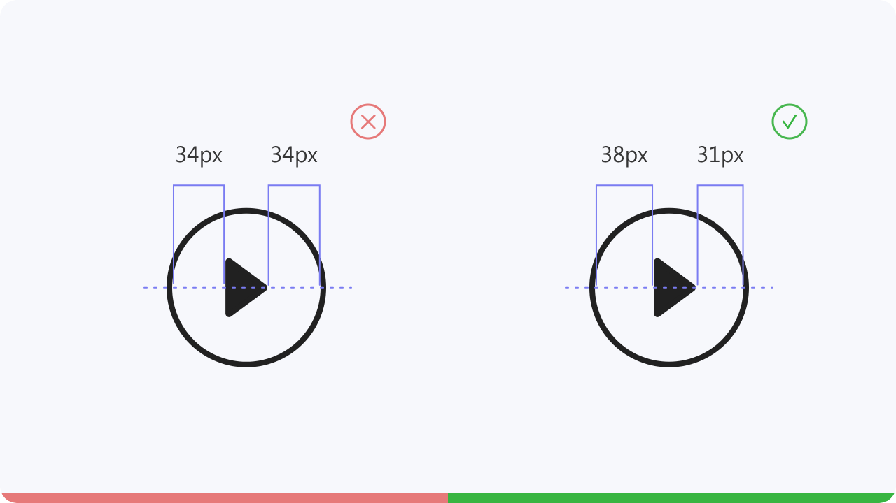
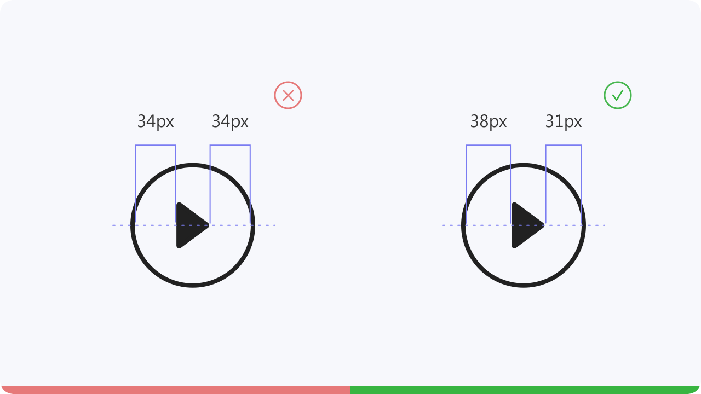

Make sure each icon feels balanced, align
it’s elements visually. Don’t simply trust the
numbers, use your eye to check your work.
it’s elements visually. Don’t simply trust the
numbers, use your eye to check your work.
Icons
Learn how to create your own icons, best practice tips and how to use icons.
Also learn about old versus new icons and get inspiration or free icon sets via
links that are provided for you.
Also learn about old versus new icons and get inspiration or free icon sets via
links that are provided for you.
The size of the artboard should be 192 x 192px and
the padding must be 4px. This way all your icons will
be built in a 188px frame.
the padding must be 4px. This way all your icons will
be built in a 188px frame.
The measurements for this shape are:
Height: 152px
Width: 152px
Height: 176px
Width: 128px
Height: 128px
Width: 176px
Diameter: 176px
Best practice tips
To achieve consistency for an icon family,
keep the same icon style throughout to ensure perfekt harmony. That means you have to use the same shapes, fill, stroke
thickness and size.
keep the same icon style throughout to ensure perfekt harmony. That means you have to use the same shapes, fill, stroke
thickness and size.
Make sure that all shapes of your icon have enough space. Too thin strokes and spaces will make the icon
harder to understand.
When working with multiple shapes, leave enough space between them or reduce the amount of shapes.
When working with multiple shapes, leave enough space between them or reduce the amount of shapes.
Is a letter still suitable to represent an email, or would there be another symbol that would probably be more
suitable?
Old vs new
There are many icons that represent something that no longer corresponds to modern times.
However, they are used because the meaning of them is understandable for many. But wouldn’t
it be better to make icons more contemporary?
However, they are used because the meaning of them is understandable for many. But wouldn’t
it be better to make icons more contemporary?
The so called telephone bone is often used for call applications. Older generations still know this type of
phones. But what about the younger ones.
Is it understandable for them? Shouldn’t this be a modern kind of phone that is also used today?
Is it understandable for them? Shouldn’t this be a modern kind of phone that is also used today?
We already know the trash can icon from mobile devices as well as from desktops and laptops. But do we really
throw our digital data into a garbage can?
Icons are most effective when they add visual interest and grab the user’s attention.
They help guide the user when navigating a page or even to reinforce the importance
of actions. Use too many icons and they will become nothing more than decoration.
Here are a few examples of how to use icons.
They help guide the user when navigating a page or even to reinforce the importance
of actions. Use too many icons and they will become nothing more than decoration.
Here are a few examples of how to use icons.
Icons are often used within navigation elements. Two examples would be the tab bar on mobile devices and the
burger menu. To make the icons in the tab bar really understandable, you can also add text to strengthen their
meaning.
Make sure that your icons, for example in buttons, are centered to the text and also not much bigger than the
text.
This will make your design look choppy and clumsy.
This will make your design look choppy and clumsy.
Make sure that the icon in your button is center aligned to the text. Otherwise it looks too restless.
This is how, for example, your icon
would then look in this grid.
would then look in this grid.
Icons can be used in buttons or with links to strengthen the meaning of them.
Icons are also often used to represent shortcuts. An example of this would be in social media.
You give a like by tapping or clicking on the heart icon or start writing a comment by tapping or clicking on the speech bubble.
You give a like by tapping or clicking on the heart icon or start writing a comment by tapping or clicking on the speech bubble.

Make sure that the same section is always displayed for icons. As an example, let’s take the brush and pen. If
you show only the front part of the brush and not the entire brush, you have to do the same for the pen. This
must be done to ensure that all the icons are consistent.
If you’re looking for inspiration to create your own icons or maybe
you’d rather download free icon sets here are a few links.
you’d rather download free icon sets here are a few links.
thenounproject
ikonate
useanimations
streamlineicons
 



Grid
Step 01
Keylines
Step 02
Square
Step 03
Vertical rectangle
Step 04
The measurements for this shape are:
Horizontal rectangle
Step 05
The measurements for this shape are:
Circle
Step 06
The measurements for this shape are:
Circle
Step 06
Simplicity
01
Alignment
02
Consistency
03
Space
04
Icon size vs text size
05
06
Same Section
07
Phone
01
Email
02
Delete
03
01
Strengthen meaning
02
Shortcuts
03


Google